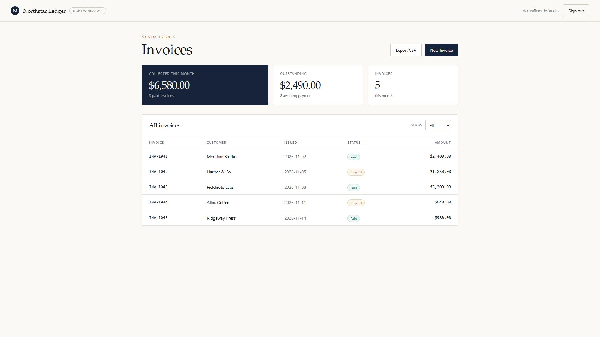

Truth report · 21 Nov 2026 · real Chrome
Docs shouldn’t lie.
Now they don’t.
First run: 3 of 5 promises survived and ProseProof caught 1 app bug and 1 drift. After the repair, all 5 pass in real Chrome.
The redline sheet
Each numbered promise is lifted from the docs with a line citation, then checked in Chrome. Open a row for the evidence.
N-01
Sign in
Sign in with demo@northstar.dev / demo1234 — you should land on the Invoices dashboard.

What the docs promised
Sign in with demo@northstar.dev / demo1234 — you should land on the Invoices dashboard.
Verdict
PROVEN Every documented step passed in real Chrome.
Kane CLI evidence
- Classification
- PROVEN
- Steps executed
- 7
- Confidence
- 100%
N-02 Use the Show filter and choose Paid Use the Show filter and choose Paid — the table lists only paid invoices.
What the docs promised
Use the Show filter and choose Paid — the table lists only paid invoices.
Verdict
PROVEN Every documented step passed in real Chrome.
Kane CLI evidence
- Classification
- PROVEN
- Steps executed
- 13
- Confidence
- 100%
N-03 Click New Invoice Click New Invoice, enter a customer and amount, then Save invoice — the new invoice appears at the top of the table.
What the docs promised
Click New Invoice, enter a customer and amount, then Save invoice — the new invoice appears at the top of the table.
Verdict
PROVEN Every documented step passed in real Chrome.
Kane CLI evidence
- Classification
- PROVEN
- Steps executed
- 19
- Confidence
- 100%
N-04 Click Export CSV Click Export CSV — the page confirms Exported invoices to invoices.csv.
What the docs promised
Click Export CSV — the page confirms Exported invoices to invoices.csv.
First run
APP BUG GET http://localhost:4177/api/export returned 500 during a documented user flow.
After the repair
PROVEN Every documented step passed in real Chrome.
Kane CLI evidence
- Classification
- application_issue/api_error
- Network
500http://localhost:4177/api/export- Steps executed
- 16
- Confidence
- 96%
Failing requests
- 500 GET http://localhost:4177/api/export
- 500 GET http://localhost:4177/api/export
- 500 GET http://localhost:4177/api/export
Console
- Failed to load resource: the server responded with a status of 500 (Internal Server Error)
- Failed to load resource: the server responded with a status of 500 (Internal Server Error)
- Failed to load resource: the server responded with a status of 500 (Internal Server Error)
Kane suggested repair
Update the export service to handle invoice numbers in their stored format, then retry the export and show the success confirmation only after the CSV is created.
N-05 Open Invoices and read the monthly summary Open Invoices and read the monthly summary — the first card is labelled Collected this month and totals every paid invoice.
What the docs promised
Open Invoices and read the monthly summary — the first card is labelled Collected this month and totals every paid invoice.
First run
DOC DRIFT Docs promise “the first card is labelled Paid this month and totals every paid invoice”, but Chrome shows “Collected this month”.
Observed in Chrome
“Collected this month”
After the repair
PROVEN Every documented step passed in real Chrome.
Kane CLI evidence
- Classification
- application_issue/ui_state_mismatch
- Steps executed
- 9
- Confidence
- 90%
Kane suggested repair
Update the first Invoices summary card label to “Paid this month,” while retaining its current calculation of paid invoice amounts.
The closed loop
Kane’s failure evidence drove a real agent patch, then Kane re-checked the truth.
-
Kane runs the README in Chrome
3/5 promises proven · 1 app bug(s) · 1 doc drift(s) · policy FAIL
-
ProseProof triages the failure
N-04: APP_BUG — GET http://localhost:4177/api/export returned 500 during a documented user flow. N-05: DOC_DRIFT — Docs promise “the first card is labelled Paid this month and totals every paid invoice”, but Chrome shows “Collected this month”.
-
Anti-cheat guard self-test
A patch that deleted claim N-05 was rejected before any repair was accepted.
CLAIM_REMOVED: Claim N-05 disappeared from the docs: “Open **Invoices** and read the monthly summary — the first card is labelled **Paid this month** and totals every paid invoice.” CLAIM_COUNT_DROPPED: Docs lost 1 verifiable claim(s). A repair may update wording, not delete promises.
-
Agent repairs the real cause
N-04: The export endpoint returns 500 because toCsv calls padStart on numeric invoice numbers, which are not strings. (1 edit) · N-05: The Invoices page correctly totals paid invoices but labels the first summary card “Collected this month,” so the README should match the shipped UI wording. (1 edit)
-
Kane re-checks the truth
5/5 promises proven · policy PASS
Anti-cheat guard self-test
Rejected Delete claim N-05 (“Open Invoices and read the monthly summary”) from the docs and call the suite fixed.
CLAIM_REMOVED Claim N-05 disappeared from the docs: “Open **Invoices** and read the monthly summary — the first card is labelled **Paid this month** and totals every paid invoice.”
CLAIM_COUNT_DROPPED Docs lost 1 verifiable claim(s). A repair may update wording, not delete promises.
The repair
Exact diff the agent applied after the guard confirmed every promise survived.
diff --git a/examples/northstar-ledger/README.md b/examples/northstar-ledger/README.md index 4d33d08..67cd2c6 100644 --- a/examples/northstar-ledger/README.md +++ b/examples/northstar-ledger/README.md @@ -23,7 +23,7 @@ Sign in with `demo@northstar.dev` / `demo1234`, then follow these checks against 2. Use the **Show** filter and choose **Paid** — the table lists only paid invoices. 3. Click **New Invoice**, enter a customer and amount, then **Save invoice** — the new invoice appears at the top of the table. 4. Click **Export CSV** — the page confirms `Exported invoices to invoices.csv`. -5. Open **Invoices** and read the monthly summary — the first card is labelled **Paid this month** and totals every paid invoice. +5. Open **Invoices** and read the monthly summary — the first card is labelled **Collected this month** and totals every paid invoice. ## What is in the ledger diff --git a/examples/northstar-ledger/server.js b/examples/northstar-ledger/server.js index d5cf2f7..316aca9 100644 --- a/examples/northstar-ledger/server.js +++ b/examples/northstar-ledger/server.js @@ -212,7 +212,7 @@ function toCsv(rows) { const header = 'number,customer,amount,status,issued'; // Invoice numbers are zero-padded identifiers in the exported ledger. const lines = rows.map((invoice) => [ - invoice.number.padStart(6, '0'), + String(invoice.number).padStart(6, '0'), invoice.customer, invoice.amount.toFixed(2), invoice.status,
Sealed evidence
Kane CLI writes a tamper-evident .evidence pack for every run. ProseProof judges the pack with a CEL-style policy and keeps the proof inspectable.
Policy gates
| Gate | Metric | Expected | Actual | Status |
|---|---|---|---|---|
no-failed-tests |
totals.failed | equals 0 | 0 | pass |
all-tests-pass |
pass_rate | min 1 | 1 | pass |
every-test-asserts |
metrics.tests_without_checks | equals 0 | 0 | pass |
review-heals |
metrics.heal.healed_tests | max 0 | 0 | pass |
Pack
- Evidence ID
d94bad9a-dffb-4e4c-928e-9671d544e6ba- Pack
—- Integrity
- L1 VALID
- Tests sealed
- 5
Reproduce
node bin/proseproof.js check --docs examples/northstar-ledger/README.md --url http://localhost:4177